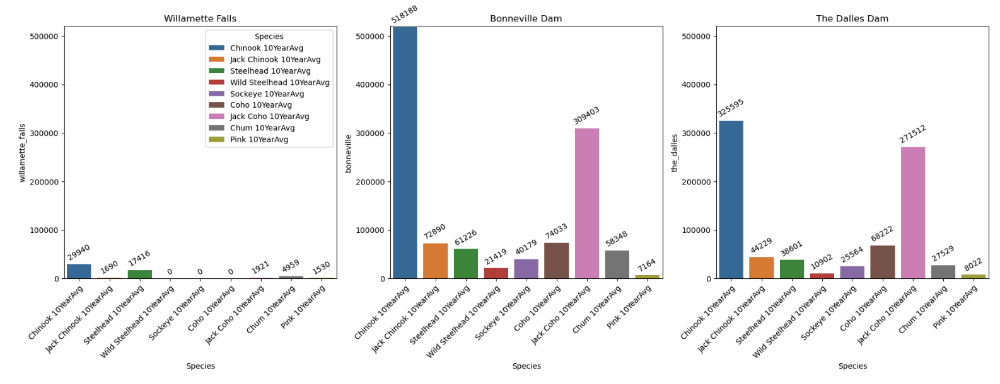
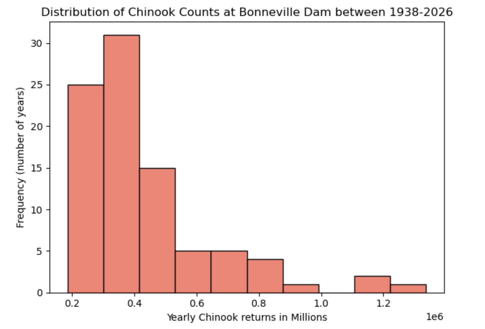
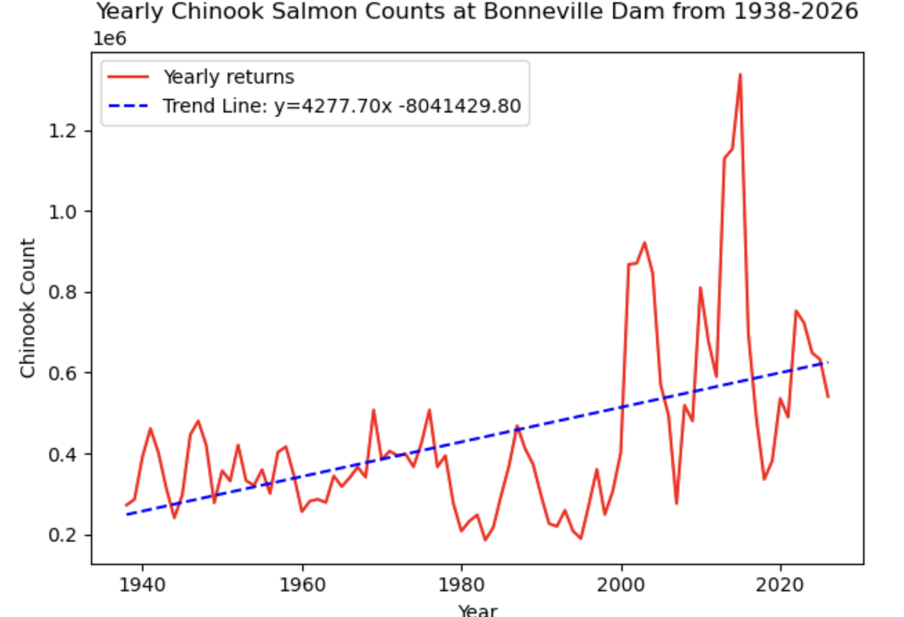
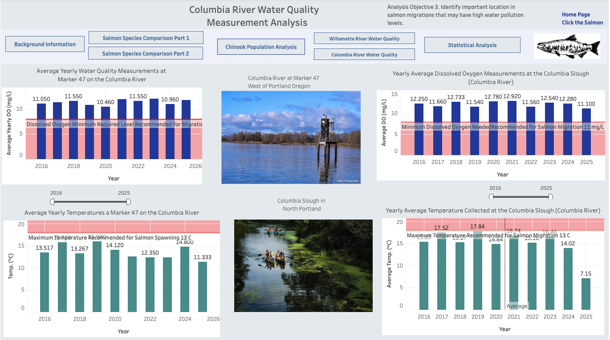
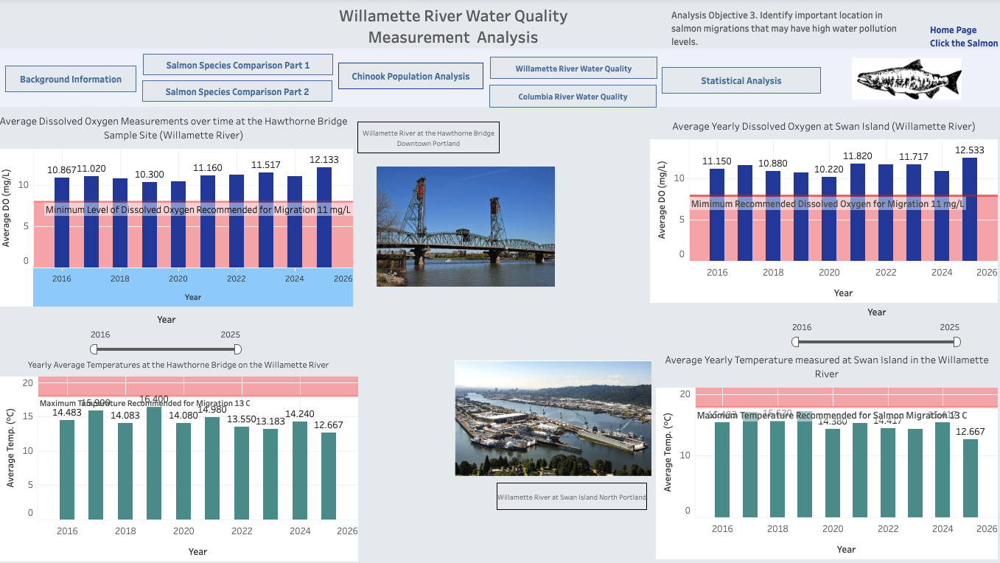

Salmon Returns & Water Quality
Investigating Pacific salmon passage, historical Chinook trends and environmental conditions across the Columbia and Willamette river systems.
Four research objectives. One analytical workflow.
I cleaned and combined fisheries and water-quality datasets, explored passage counts and trends, tested statistical relationships, and communicated findings with Tableau. The project emphasizes reproducible analysis and careful interpretation of observational data.
Historical trends: For the matched 1971–2024 period, fitted annual Chinook passage trends were approximately +9,095 fish/year at Bonneville Dam (p < 0.0001) and −512 fish/year at Willamette Falls (p ≈ 0.0017). Annual counts at the two sites were weakly correlated (Pearson r ≈ 0.124; p ≈ 0.371).
Water quality: Columbia Slough had lower composite Oregon Water Quality Index (OWQI) scores than the other sampled stations through 2024. The exploratory annual OWQI-versus-Chinook regression had low explanatory power (R² ≈ 0.0276), with a non-significant fitted slope (p ≈ 0.66).
Interpretation: These observational comparisons do not establish causation, and annual averages can obscure seasonal conditions relevant to salmon migration.
Explore the current state of salmon populations over the last 10 years, and in 2026.

Key findings
Ten-year average Chinook passage: Bonneville 518,188; The Dalles 325,595; Willamette Falls 29,940.
Summed species-category averages at The Dalles were 70.53% of Bonneville; Willamette Falls were 4.94%.
Differences reflect distinct migration routes and monitoring coverage—not a direct mortality estimate.
Comparing the 2026 species counts and ten-year average passage counts across the monitoring locations helped determine which salmon species to focus on for the rest of the study. Chinook salmon had the highest counts and represented the largest proportion of fish counted relative to the other species at the locations compared. I therefore selected Chinook salmon for the historical passage and water-quality analyses, rather than choosing a study species before examining the data.
Behind the analysis
Python code · Iteration and range calculations
Excerpt from the original capstone Jupyter notebook, with comments removed for readability.
for c in [
willamette10_df['willamette_falls'],
bonn10_df['bonneville'],
dalles10_df['the_dalles']
]:
print(c.max() - c.min())Source: Original notebook. Code is presented as written, not a fabricated example.
Detailed interpretation and methodological limitations
The exploratory analysis compared nine reported fish categories, summarized site-level passage and calculated ranges. Species labels may include life-stage or origin categories, so these results should not be treated as a biodiversity index.
Future research
Reconcile adult/jack categories and examine species-specific, matched-period passage ratios.
Choose one pacific salmon species and review historic population trends.



Key findings
For 1971–2024, Bonneville's fitted annual slope was approximately +9,095 fish/year (p < 0.0001).
Willamette Falls' fitted slope was approximately −512 fish/year (p ≈ 0.0017).
Annual site counts had weak, non-significant Pearson correlation (r ≈ 0.124; p ≈ 0.371).
For the matched 1971–2024 period, Chinook passage at Bonneville Dam showed a statistically significant increasing linear trend (approximately +9,095 fish per year; p < 0.0001), while passage at Willamette Falls showed a statistically significant decreasing trend (approximately −512 fish per year; p ≈ 0.0017). Annual passage counts between the two locations were only weakly correlated (Pearson r ≈ 0.124; p ≈ 0.371), indicating that the year-to-year changes at one counting location did not closely track those at the other. These results describe separate site-specific trends; they do not establish a statistically significant difference between slopes without a direct comparison.
Behind the analysis
Python code · Pearson correlation
Excerpt from the original capstone Jupyter notebook, with comments removed for readability.
r, p_value= scipy.stats.pearsonr(
bonn_filtered_years_df['chinook_count'],
willamette_cot['total_yearly_chinook']
)
print(f'r= {r:.4f}')
print(f'p value = {p_value: .4f}')Source: Original notebook. Code is presented as written, not a fabricated example.
Additional Python · Custom function and nonlinear fitting
Exploratory exponential curve fitting. This was not established as a better model than linear regression.
data = yearly_chinook_df[['year', 'chinook_count']].sort_values('year')
years = data['year'].to_numpy(dtype = float)
counts= data['chinook_count'].to_numpy(dtype= float)
time = years - years.min()
def exponential(time, a, b):
return a + np.exp(b* time)
parameters, _ = scipy.optimize.curve_fit(
exponential,
time,
counts,
p0= (counts.mean(), 0),
maxfev= 10000
)
plt.plot(years, counts, label= 'Yearly returns')
plt.plot(
years,
exponential(time, *parameters),
color= 'red',
label = 'Exponential trend'
Detailed interpretation and methodological limitations
The matched 1971–2024 window avoids comparing different observation periods. Bonneville's longer 1938–2026 series was also explored using descriptive statistics and an experimental nonlinear fit.
Future research
Compare model fit and residuals, document counting-method changes, and test slope differences directly.
Evaluate Water Quality data near the Portland Metro Area.
Key findings
Columbia Slough had consistently lower composite OWQI scores than the other stations through 2024.
Swan Island's dissolved oxygen subindex fluctuated substantially, reaching 23.78 in 2021.
The 2025 OWQI changes require confirmation of seasonal sampling completeness before interpretation.


Comparing annual Oregon Water Quality Index (OWQI) results across the four monitoring stations identified differences in water quality by location. Columbia Slough at Landfill Road consistently had lower composite OWQI scores than the other stations through 2024, while the dissolved oxygen subindex at Swan Island fluctuated substantially, reaching 23.78 in 2021. Examining the underlying dissolved oxygen and temperature measurements alongside salmon migration reference benchmarks provided more specific environmental context than the overall index alone. Because these values were aggregated into annual averages, the comparisons do not establish whether conditions remained within suitable ranges throughout migration periods.
Behind the analysis
Python code · Vectorized station filtering
Excerpt from the original capstone Jupyter notebook, with comments removed for readability.
station_filter= wat_qual_df['Station Description'].isin([
'Willamette River at Hawthorne Bridge',
'Columbia River at Marker #47 (upstream of Willamette River)',
'Swan Island Channel Midpoint',
'Columbia Slough at Landfill Road',
])
filtered_stations_df= wat_qual_df[station_filter]
filtered_stations_df.head()Source: Original notebook. Code is presented as written, not a fabricated example.
Detailed interpretation and methodological limitations
Approximately four seasonal samples per water year were averaged by station. Annual mean raw dissolved oxygen and temperature were compared with selected reference values, but do not demonstrate year-round compliance or absence of short-lived stress.
Future research
Analyze individual seasons across years and align observations with spring, summer and fall Chinook migration runs.
Use Statistics to find trends in the data, and uncover relationships between population and water quality variables.

River-specific regression comparison
| River system | Chinook count site | OWQI monitoring station | R² | p-value |
|---|---|---|---|---|
| Columbia | Bonneville Dam | Columbia Marker #47 | 0.0292 | 0.6603 |
| Columbia | Bonneville Dam | Columbia Slough | 0.0260 | 0.6784 |
| Willamette | Willamette Falls | Hawthorne Bridge | 0.1679 | 0.2734 |
| Willamette | Willamette Falls | Swan Island | 0.0152 | 0.7523 |
All four slope p-values exceed α = 0.05. None of the four models found a statistically significant linear association; this does not establish that no ecological relationship exists.
Key findings
Exploratory OWQI-versus-Chinook regression yielded R² ≈ 0.0276.
The fitted slope was not statistically significant (p ≈ 0.66).
Annual aggregation, site differences and water-year versus calendar-year alignment limit interpretation.
The statistical tests did not detect a significant linear relationship between annual Chinook passage counts and the tested annual water-quality measures. In the exploratory OWQI-versus-Chinook regression, the model explained approximately 2.76% of the variation (R² ≈ 0.0276), and the fitted slope was not statistically significant (p ≈ 0.66). The site-specific regressions also had non-significant slopes (all p > 0.05). Therefore, these analyses did not provide evidence of a detectable annual linear association in the data tested; they do not rule out seasonal, localized, or nonlinear effects of water quality on migrating salmon.
Behind the analysis
Python code · Annual water-quality aggregation
Excerpt from the original capstone Jupyter notebook, with comments removed for readability.
avg_index_haw = loc_hawthorne_w_df.groupby('Water Year')[loc_hawthorne_w_df.columns[16:25]].mean()
avg_index_haw.head()Source: Original notebook. Code is presented as written, not a fabricated example.
Detailed interpretation and methodological limitations
The broader notebook also includes t-tests comparing ten-year species averages between locations. These comparisons require careful review of the sampling unit and test assumptions.
Future research
Check time alignment, sampling coverage, assumptions and seasonal exposure before considering stronger ecological conclusions.
Patterns are meaningful; uncertainty matters.
Fish passage patterns differed across sites and years, and overall water quality varied substantially among monitoring stations. The tested annual water-quality relationship was not statistically significant. These observational results motivate more detailed seasonal, spatial and migration-run analyses—not causal claims.